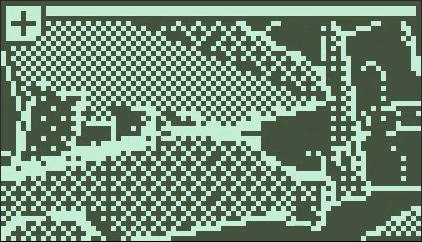

Nokia 3310
!! Game may take a few seconds to load and hang on a green screen for a bit. !!
This project was made for the Nokia 3310 Game Jam, but proved to be more of a tech demo than a game. The game's theme was related to horde control, of which zombies losely fit. The aim of the Nokia 3310 game jam is to produce a game that consists of just 2 colours in an 84x48 resolution. There can also only be 11 inputs, none of which can be from the mouse.

I first approached it from developing a shader to allow for visual 3D graphics within such a small screen. This was accomplished by combining a custom dither and outline shader, tying it all together with some maths. Eventually I was happy with the results after modifying values and such.
This shader was made using the Unity Unlit Shader Graph.